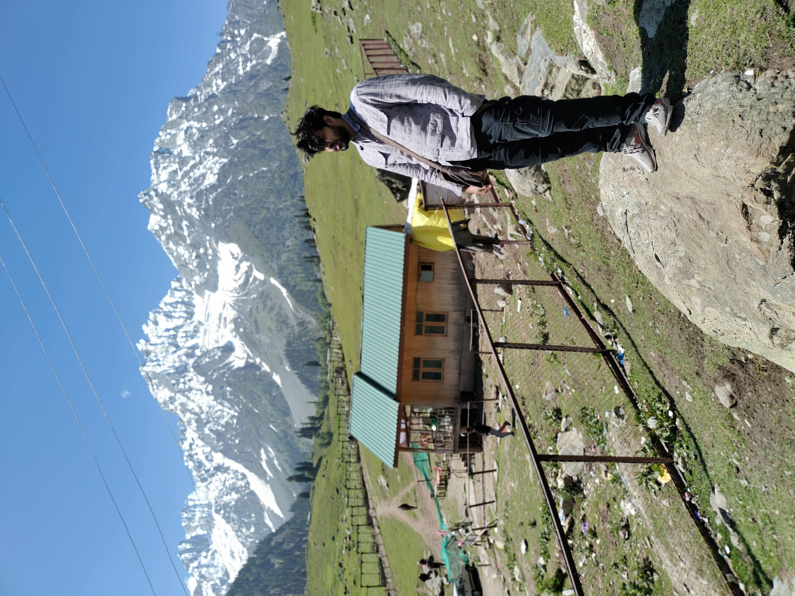

I am a Flutter developer with two years of experience. I am excited to
transition into the world of web development and am currently seeking
opportunities to expand my skills and expertise in this field.
Throughout my career as a Flutter developer, I have gained a deep
understanding of programming concepts and have honed my skills in
developing high-quality mobile applications. I am proficient in
languages such as Dart, JavaScript, and TypeScript, and have experience
working with popular frameworks such as Angular and React. As a
passionate and driven developer, I am constantly seeking new challenges
and opportunities to learn and grow. I am a team player and enjoy
collaborating with others to develop innovative solutions to complex
problems.
I am excited about the prospect of applying my skills and experience to
web development and am eager to take on new projects and challenges.
Thank you for considering my application.
